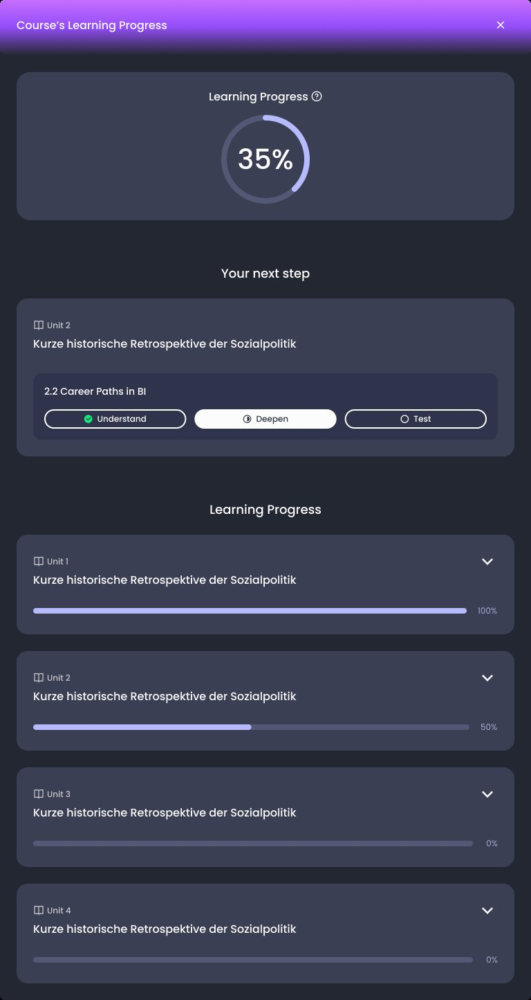
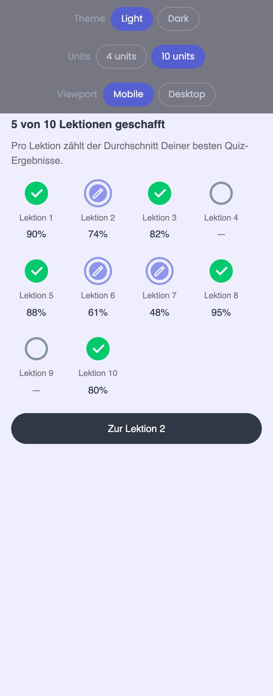

Selected work · 2014 – 2026
Problems worth a designer’s time
Seven cases, each told the same way: the problem people had, what I did about it, and what changed. AI products first, then the scale work that came before.
Designing for AI · 2025 – 2026

Syntea: from exam-week tool to daily companion
Making an AI study companion part of the first two weeks, not the last two days.

Building a study habit
A habit loop for students, drawn as the four decisions the system makes.

Exam readiness
Two features, one unmet need: a trustworthy answer to “am I ready?”

Exam admission
Could regular practice count as admission, without making anyone feel ready who is not?

WorkShift
A learning companion that turns a leadership course into something to try at work this week.
Scale, platforms and design leadership · 2014 – 2025

myCampus 2.0
Consolidating three grown systems into one platform without losing the students on the way.

Sky: one visual language, many owners
Refreshing the help centre, the intranet and the newsletters of a pay-TV brand, inside a company where every page had a different owner.
Earlier work, 2007 – 2024
Websites, applications and interfaces for IU, Zetcom, Canto, Auriga and Giesecke & Devrient, shown as screens rather than stories. See the gallery →